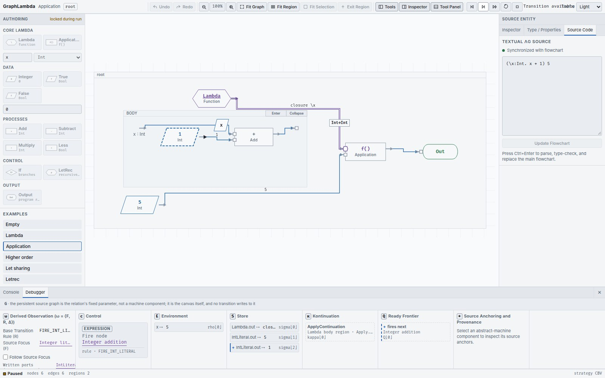

Step the machine on the source
Run opens a call-by-value machine session. The source graph stays fixed while the machine computes and its observations identify what changed.
How evaluation proceeds
Application evaluates the function and argument before entering the function body. A Lambda evaluates to a closure without executing its body. An If evaluates its Boolean condition and executes only the selected branch. A shared producer supplies its value to its consumers; a recursive call is introduced through LetRec.
The base machine state is
m = ⟨c, ρ, σ, κ, Q⟩
. SAVAM, the
Source-Anchored Visual Abstract Machine
, adds observations
ω = ⟨F, R, Δ⟩
over the persistent graph
G
. Those observations describe transitions; they do not choose how the base machine evaluates.
The run controls
| Control | Effect |
|---|---|
| Run | Open a session on the complete installed graph. |
| Step | Take one machine transition, or replay the next recorded one. |
| Step Back | Restore a previous recorded configuration. This is history navigation, not an inverse evaluation rule. |
| Run to End | Advance in responsive batches until termination, a stuck state, Pause or the transition limit. |
| Pause | Stop automatic stepping at the current configuration. |
| Continue | Grant a fresh budget after the transition limit. A limit is not proof of nontermination. |
| Reset | Start a fresh session on the same graph. |
| Close Run | Discard the run and unlock structural editing. |
The automatic-run budget is 2,000 transitions at a time. After Pause, Run to End resumes from the current state. A terminating program reports its final value in Control.
Read the debugger


| Heading | Meaning |
|---|---|
| Control (c) | The current instruction, or a returned / final value, and the rule that produced it. |
| Environment (E / ρ) | Bindings from binder identities to runtime values. |
| Store (S / σ) | Values indexed by source ports. This is not a language heap. |
| Kontinuation (κ) | Suspended evaluation contexts, shown with the top frame first. |
| Ready Frontier (Q) | Nodes currently available to schedule. “fires next” marks the head used by this session. |
| Derived Observation (ω) | Source Focus F, Base Transition Rule R, and the effect fields Δ, including port writes, clears and region / frame events. |
The canvas itself is
G
, the fixed parameter, so it is not another changing register. Runtime values appear on their outgoing wires, or on a socket when no outgoing wire is visible in the current view.
Follow a value back to source
Select a machine row to populate Source Anchoring and Provenance . A closure can reveal its Lambda, body, parameter and captures. Select an enabled source link to open the appropriate region, centre the source element and mark it. Navigation does not advance the machine.
Clicking a valued wire or port during a run selects the corresponding Store row rather than beginning a connection. Enable Follow Source Focus to follow the current observation as you step. Source selection, machine focus and provenance anchors retain distinct marks.
The
+
and
±
row marks distinguish additions from updates. An Environment row marked
same name
shares a display spelling with another live binding; lookup still follows binder identity.
Interpret the status
Transition available means the session can step. Terminated means it reached a final value. Stuck means it cannot take an expected transition; inspect the diagnostic. Transition limit reached means the automatic budget ended and Continue is available.
While a run is open, palette edits, property changes, textual replacement and Undo / Redo are locked. Moving nodes and navigating the view remain available because they do not alter the source graph.